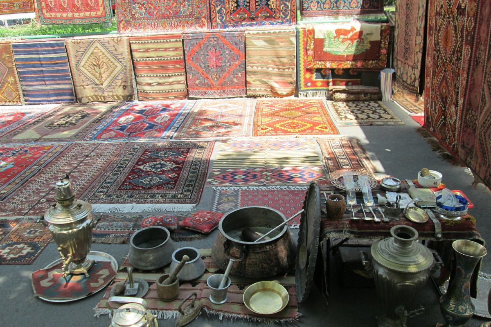

Bazar u czarnego!
Dostępne rzeczy (kradzione):
dzbanki i obrazy
dywany i koce
buty i sandały
telefony i klucze
gumy do żucia (używane)
Tak wygląda mój bazar, poniżej zdjęcia. Rzeczy prosto z fabryki!
